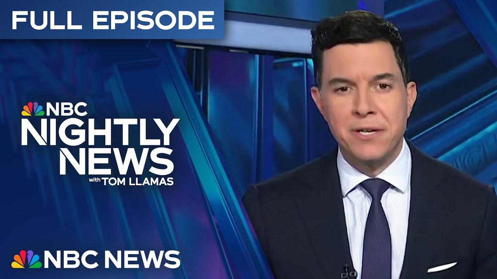

【NBC晚间新闻｜北美时间2025-06-20｜中东紧张局势升级｜美国破纪录高温｜夏威夷火山喷发】
Summary: Tonight's coverage includes escalating tensions in the Middle East, record-breaking heat across the U.S., a kidnapping plot targeting Memphis' mayor, and a volcanic eruption in Hawaii.
摘要： 今晚节目涵盖中东紧张局势升级、美国破纪录高温、针对孟菲斯市长的绑架阴谋以及夏威夷火山喷发。

⏱️ Estimated Reading Time: 27 min
📚 六级生词 📚 雅思生词 📚 托福生词 📚 专八生词 📚 SAT生词 📚 考研生词 📚 GRE生词 📚 高考生词
Tonight, no signs of deescalation in the Middle East and our exclusive interview.
今晚，中东局势未见缓和迹象，且我们带来独家专访。
Iran accusing the Trump administration of diplomatic betrayal.
伊朗指责特朗普政府外交背叛。
The new strikes breaking through, hitting a highrise in Israel and the new explosion caught on surveillance video.
新一轮袭击突破防线，击中以色列一栋高楼，监控视频捕捉到爆炸画面。
Plus, our exclusive with Iran's foreign minister, the highest level interview since it all began.
此外，我们独家专访伊朗外长，这是冲突爆发以来最高级别访谈。
Why he said he doesn't trust the US after trying to make a nuclear deal.
他解释为何在尝试达成核协议后不再信任美国。
and what he said about possibly retaliating against America.
以及他对可能报复美国的表态。
And this just in, President Trump responding directly to that interview.
最新消息：特朗普总统直接回应该专访。
Andrea Mitchell reporting from Geneva.
安德莉亚·米切尔从日内瓦发回报道。
Records shattering heat stretching coast to coast.
破纪录高温席卷全美。
Dangerous temperatures and extreme humidity, making it sweltering for 139 million Americans from Arizona to Massachusetts.
危险高温与极端湿度令从亚利桑那到马萨诸塞的1.39亿美国人酷热难耐。
The chilling kidnapping plot targeting the mayor of Memphis.
针对孟菲斯市长的骇人绑架阴谋。
A man arrested with rope, duct tape, and a taser after scaling a brick wall outside his home.
一名男子携带绳索、胶带和电击枪翻越市长住宅外墙后被逮捕。
The deadly rockfall sending giant clouds of dust in the air.
致命岩崩激起巨大尘埃云。
The hikers fleeing as the sides of this cliff come crashing down.
徒步者逃离崩塌的山崖。
What happened at the national park millions visit every year.
这个每年数百万游客的国家公园发生了什么。
Karen Reed was found not guilty of murder.
凯伦·里德被裁定谋杀罪名不成立。
Now we're hearing from the jurors who decided her fate.
现在听取决定其命运的陪审员陈述。
The key piece of evidence about a tail light that helped change minds in the juror's box.
关键证据——尾灯碎片改变了陪审团立场。
Love and poison.
爱情与毒药。
The couple plotting to kill several women with cyanide.
夫妇密谋用氰化物杀害多名女性。
Even breaking into their cars to lace their water with a deadly mixture.
甚至闯入车辆向水瓶投毒。
Home prices approaching all-time highs.
房价逼近历史峰值。
While the suburbs are turning into rental meccas.
郊区正变成租赁天堂。
The massive volcano on Kilawea erupting again, firing lava more than a,000 ft into the air.
基拉韦厄火山再次喷发，岩浆喷射超千英尺。
The new images.
最新画面。
Nightly News starts right now.
《晚间新闻》现在开始。
This is NBC Nightly News with Tom Yamz.
这里是汤姆·亚马兹主持的NBC《晚间新闻》。
And good evening.
晚上好。
President Trump tonight responding directly to our exclusive interview you're about to see as he considers whether to strike Iran.
特朗普总统在考虑是否打击伊朗时，直接回应我们即将播出的独家专访。
Israel and Iran still battling it out.
以色列与伊朗持续交火。
From missiles blasting this building in Hifa in the north to this surveillance video capturing an explosion down south.
从北部海法市导弹炸毁建筑，到南部监控拍下的爆炸。
And while world leaders are in Europe trying to find a way out of a spiraling regional war in the Middle East, we are hearing straight from the Iranian foreign minister himself.
当世界领袖在欧洲寻求化解中东地区战争时，我们直接聆听伊朗外长表态。
In an exclusive interview with NBC News, he says Iran doesn't trust the US and accuses the Trump administration of pretending to want to negotiate while Israel launched an assault.
在NBC独家专访中，他称伊朗不信任美国，指责特朗普政府假意谈判而纵容以色列进攻。
And we'll hear about what he said, whether Iran could retaliate against this country.
我们将报道他关于伊朗可能报复美国的言论。
Andrea has our global exclusive tonight and leads us off.
安德莉亚带来全球独家报道并开启今晚节目。
Tonight, the news strikes.
今晚聚焦袭击新闻。
A surveillance camera capturing an Iranian missile hitting a residential building in Israel.
监控镜头记录伊朗导弹击中以色列居民楼。
And this Iranian strike hitting the northern Israeli city of Hifa.
这次伊朗袭击击中以色列北部城市海法。
While Israel striking missile launchers in Iran.
同时以色列打击伊朗导弹发射场。
Today, in an exclusive interview, Iran's foreign minister calling on President Trump to demand Israel stop its attacks.
今日独家专访中，伊朗外长呼吁特朗普要求以色列停止攻击。
What it needs is only a telephone call from Washington to Tel Aviv to stop everything.
只需华盛顿致电特拉维夫即可停止一切。
Tonight, President Trump responding, saying Israel is winning.
今晚特朗普回应称以色列正在取胜。
I think it's very hard to make that request right now.
我认为此刻难以提出此要求。
If somebody's winning, it's a little bit harder to do than if somebody's losing.
当一方占优时，这比其处于劣势时更难实现。
But we're ready, willing, and able.
但我们已准备就绪。
And we've been speaking to Iran, and we'll see what happens.
我们一直与伊朗沟通，静观其变。
All of it as President Trump again met in the situation room as he decides whether to launch a US air strike on the underground Iranian Fordo nuclear facility.
与此同时特朗普再开战情室会议，考虑是否空袭伊朗福尔多地下核设施。
Only the US has the bunker buster bombs capable of destroying it.
仅美国拥有可摧毁该设施的钻地弹。
Within a matter of weeks or certainly within a matter of months, they're going to be able to have a nuclear weapon.
数周或数月内伊朗或将拥有核武器。
We can't let that happen.
我们绝不能允许。
He said he'll wait up to two weeks to give diplomacy a chance.
他表示将等待两周给外交斡旋机会。
Just a time to see whether or not people come to their senses.
这只是观察各方是否恢复理智的时间。
Tonight, Iran's foreign minister tells us they won't resume talking to the US until Israel stops attacking them.
今晚伊朗外长表示除非以色列停止攻击，否则不会与美国重启对话。
Can diplomacy produce a solution in 2 weeks?
外交能在两周内解决问题吗？
Well, I think uh it's uh up to uh you know uh Americans uh the United States I mean to show their determination for uh going for a negotiated solution.
我认为这取决于美国展现谈判解决的决心。
We have come to the conclusion that negotiations by the US was in fact a cover for what Israelis did.
我们认定美国的谈判实为以色列行动的掩护。
So they had perhaps this plan in their mind uh and just uh they just needed negotiations perhaps uh to cover it up.
他们或许早有预谋，仅需谈判作为幌子。
uh we don't know how we can trust them anymore.
我们不知如何再信任他们。
What they did was in fact a betrayal to to diplomacy while Iran vowing to respond to any US strike.
其行为实为对外交的背叛，伊朗誓言反击任何美国打击。
Would Iran retaliate against US targets and US forces in the region or elsewhere?
伊朗会报复美国在该地区或其他地方的目标与部队吗？
Well, when there is a war, both sides attack each other.
战争时双方互相攻击。
That that's quite understandable.
这完全可以理解。
Uh and and self-defense is a legitimate right of every country.
自卫是各国的合法权利。
President Trump again rebuking his director of national intelligence Tulsi Gabbard who said Iran has an unprecedented amount of enriched uranium for a state without nuclear weapons but that Iran's supreme leader has not yet authorized the nuclear weapons program.
特朗普再次批评国家情报总监图尔西·加巴德，她称伊朗浓缩铀储量前所未有但最高领袖尚未授权核武计划。
My intelligence community is wrong.
我的情报部门错了。
She's wrong tonight.
她今晚错了。
Gabbard says her previous comments were taken out of context while Iran's foreign minister told me Iran's nuclear knowledge cannot be destroyed by bombs.
加巴德称言论被断章取义，伊朗外长表示核知识无法被炸弹摧毁。
Andrea Mitchell with that big exclusive tonight.
安德莉亚·米切尔带来重磅独家。
Andrea, we thank you.
感谢安德莉亚。
Back here at home to the record heat stretching from the desert of Arizona to the coast of Massachusetts.
转回国内，从亚利桑那沙漠到马萨诸塞海岸的破纪录高温。
Across the West, look at this.
看西部画面。
Crews are trying to stamp out wildfires like this one in Utah.
消防员正扑灭犹他州等地的野火。
I do want to bring in Bill Karens.
现在连线比尔·卡伦斯。
And Bill, you rarely see so much of the country facing so much heat at the same time.
比尔，全国同时遭遇高温很罕见。
Yeah, from the Rockies to the East Coast.
是的，从落基山脉到东海岸。
Tom, we are all in this together.
汤姆，我们同处高温中。
Today has been brutally hot in many areas of the Midwest.
今天中西部多地酷热难耐。
Some areas in Nebraska approaching 108 degrees.
内布拉斯加部分地区近108华氏度。
All the dots and all the cities on here over a hundred are going to challenge record highs over the next couple days.
地图上所有标点及超百度的城市未来几天将冲击历史高温。
Now we're expecting the worst of it tomorrow.
预计明日最严重。
This is in the shade adding in the temperature and the humidity.
这是荫处温湿度综合指数。
This is the heat index.
这是体感温度。
108 in Omaha, 106 Minneapolis, Chicago 104.
奥马哈108，明尼阿波利斯106，芝加哥104。
Then as we go through Sunday and Monday into Tuesday, we watch the heat building to the east.
周日到周二高温将东移。
Detroit 104 on Sunday.
底特律周日104。
Look at northern Vermont on Monday feeling like 106.
周一佛蒙特州北部体感106。
And from DC to New York, Philly to Raleigh to Richmond, Tom, the worst of this will be Monday and Tuesday.
从华盛顿到纽约，费城到罗利到里士满，最严重时段是周一二。
It's a hot one.
真是高温天。
All right, Bill, we thank you for that.
好的，感谢比尔。
We want to head to Canada now where horrifying new video shows the moment where a part of a rock wall gave way, triggering a deadly slide, trapping hikers below.
现在转向加拿大，骇人视频显示岩壁崩塌引发致命滑坡，困住下方徒步者。
Our Morgan Chesy has the terrifying details.
摩根·切西带来详细报道。
Oh my god.
天啊。
In Canada, a frightening rumble turning into a deadly roar.
加拿大，恐怖轰鸣演变成致命咆哮。
A lone hiker seen scrambling for their life, chased by a rock slide, unleashing a terrifying cascade of boulders and a breeze.
独行徒步者逃命，被滚石追赶，巨石如瀑布般倾泻。
I got up and just started running.
我爬起来就开始跑。
Ellie Jackson says the wall came down with so much force it just exploded.
埃莉·杰克逊称岩壁崩塌力度之大如同爆炸。
I thought I was going to die because when I when I saw the rock coming down, I knew I couldn't survive that.
我以为会死，因为看到滚石时知道无法幸存。
Caught in its path, members of a local hiking group with multiple members caught in the slide enveloped by a massive dust cloud.
当地徒步队多名成员被卷入，笼罩在巨大尘埃中。
The fatal slide happening at Bamp National Park, Canada's most popular.
致命滑坡发生在加拿大最受欢迎的班夫国家公园。
The hike near Bo Glazier Falls, a welltraveled area near Lake Louise.
事发路易斯湖附近热门徒步路线——波冰川瀑布。
Tonight, authorities confirmed rescuers recovered a second body, adding three others were airlifted and remain hospitalized.
今晚官方确认找到第二具遗体，另三人空运就医。
Canadian geologist Dan Sugar says it's not the first time this pristine area has posed a problem.
加拿大地质学家丹·舒格表示该原始区域非首次出事。
As of right now, were there any clear warning signs that essentially this hillside would give way?
目前是否有明确预警表明该山坡会崩塌？
I don't think that it it would be possible to have kind of forecasted or predicted this particular, you know, this particular rockfall.
我认为无法预测这种特定岩崩。
Sharing a smaller slide two years ago injured several when it struck the same area.
两年前同一区域较小滑坡致数人受伤。
Every steep mountain slope, you know, releases rocks from time to time.
陡峭山坡时常会有落石。
Experts believing the slow but steady impact of water and hidden springs may have played a role compromising the rock wall.
专家认为水流与暗泉缓慢侵蚀或是岩壁松动原因。
Sugar believes based on video and images, this slide was 160 ft wide and up to 30 feet deep.
舒格根据视频判断滑坡宽160英尺深30英尺。
Authorities don't believe anyone else is missing, but say heavy rain tonight could raise the landslide risk even more.
官方认为无更多失踪者，但今晚暴雨或加剧滑坡风险。
Morgan Chesy, NBC News.
摩根·切西，NBC新闻。
Tonight, a juror in Karen Reed's trial is revealing what led her and 11 others to acquit Reed for the murder of her boyfriend.
今晚凯伦·里德案陪审员透露12人裁定其杀害男友罪名不成立的原因。
The juror pointing to a critical piece of evidence, the broken pieces of Reed's tail light.
陪审员指出关键证据——里德车尾灯碎片。
Here's Emily Aetta.
艾米丽·艾塔报道。
Three.
三。
What say is tonight?
今晚有何说法？
A window into the deliberation room where Karen Reed's fate was decided.
直击裁定里德命运的陪审团评议室。
Not guilty or guilty.
无罪或有罪。
So say you, Mr. Fuller.
富勒先生，请陈述。
So say you all.
请全体陈述。
I do believe she was innocent.
我确实相信她无辜。
Paula Prado, a trained attorney, was among the 12 jurors who found Reed not guilty of murdering her police officer boyfriend John O'Keefe with her car.
受过法律培训的保拉·普拉多与其他11名陪审员裁定里德未用车谋杀警察男友约翰·奥基夫。
A key piece of evidence.
关键证据。
Having a close look of the payite in the deliberation room.
评议室内仔细检查尾灯。
Praau said that damage was inconsistent with video of Reed's red tail light after the alleged crash.
普拉多称损伤与所谓车祸后尾灯视频不符。
The defense suggested it was tampered with.
辩方认为证据被篡改。
As for her impression of Reed, at first she gave me a vibe of being too confident.
她对里德的初印象是过度自信。
She was very uh focused on the trial and very alert of everything that was going on.
她非常专注审判且警觉所有细节。
After a while, I admired that.
后来我钦佩这点。
Reed's parents sitting down with NBC Boston after they say their first restful sleep in years.
里德父母称多年首次安睡后接受NBC波士顿采访。
We know Karen is our daughter.
我们了解女儿。
Had she done something and struck John O'Keefe, she we would have been the first to, you know, be notified.
若她真的撞了约翰·奥基夫，我们会是首个知情人。
While Reed's a quiddle was met by an eruption of cheers from her supporters.
里德无罪引发支持者欢呼。
Prao left the courtroom in tears.
普拉多含泪离庭。
As much as I I'm confident that we did the right thing and she's not guilty, I feel sorry that justice wasn't served to John O'Keefe.
尽管确信裁决正确，但对奥基夫未获正义感到遗憾。
A member of O'Keefe's family calling the verdict heartbreaking, but telling Dineine there's relief in closing this chapter.
奥基夫家人称判决令人心碎，但结束此案也是一种解脱。
A positive is Johnny can be at peace and the family and friends can grieve.
积极面是约翰尼可以安息，亲友得以哀悼。
Emily Kha, NBC News.
艾米丽·卡，NBC新闻。
All right, we're also following a developing story out of Memphis.
我们同时关注孟菲斯事件进展。
The mayor there was home with his wife and kids when police say a man walked up to the house angry and armed with a taser.
市长与妻儿在家时，警方称一名愤怒男子携电击枪靠近住宅。
The suspect now faces charges including attempted kidnapping.
嫌疑人现面临包括企图绑架在内的指控。
It's just the latest alarming case threatening the safety of lawmakers.
这是最新一起威胁议员安全的案件。
Here's Aaron Gilrest.
亚伦·吉尔克里斯特报道。
In court today, the man authorities accused of stalking and attempting to kidnap the mayor of Memphis.
今日法庭上，一名被指控跟踪并试图绑架孟菲斯市长的男子受审。
Raise your right hand.
举起你的右手。
Police say 25-year-old Trenton Abston admitted that he tracked down Mayor Paul Young and went to his home angry and armed with a taser.
警方称，25岁的特伦顿·阿布斯坦承认他追踪市长保罗·杨并携带电击棒愤怒前往其住所。
The mayor lives in a subdivision that is both gated and guarded.
市长居住在一个有门禁和保安的社区。
But that didn't stop the suspect.
但这并未阻止嫌疑人。
Police say he jumped right over this brick wall.
警方称他直接翻越了这堵砖墙。
Inside with his family, Young says he watched on a doorbell camera as Abston walked straight to our home, knocking on the door with gloves on, a full pocket, and a nervous demeanor.
杨与家人当时在家，他表示通过门铃摄像头看到阿布斯坦径直走向他家，戴着手套敲门，口袋鼓胀且神情紧张。
It happened on Sunday, less than 24 hours after a masked man went on a rampage targeting lawmakers in Minnesota.
事件发生于周日，距明尼苏达州一名蒙面男子袭击立法者不到24小时。
When Memphis police arrested Abston this week, he gave them permission to search his car.
本周孟菲斯警方逮捕阿布斯坦时，他同意搜查其车辆。
They found gloves, rope, duct tape, and a taser.
警方发现了手套、绳索、胶带和电击棒。
Police say Abston, who is licensed as an armed security guard, stated he planned to confront Paul Young about crime in the city of Memphis.
警方称，持证武装保安阿布斯坦表示计划就孟菲斯市犯罪问题与保罗·杨对峙。
But in court today, his family says he's remorseful.
但今日法庭上，其家人称他深感悔恨。
He wants to talk to the mayor.
他想与市长对话。
hear his heart and you'll understand.
倾听他的心声便会理解。
Across the country, elected officials are seeing a rising threat of political violence.
全美各地民选官员正面临日益严重的政治暴力威胁。
I'm a little shaken to be quite honest.
老实说，我有些震惊。
Police arrested a man after Ohio Congressman Max Miller says he was targeted for being Jewish while driving to work.
俄亥俄州众议员马克斯·米勒称驾车上班时因犹太人身份遭袭后，警方逮捕一名男子。
Thank God my daughter was not in my vehicle.
感谢上帝我女儿当时不在车上。
And in New York, the NYPD says it's investigating a bomb threat and racist messages directed at mayoral candidate Zoran Mdani.
纽约警方称正调查针对市长候选人佐兰·姆达尼的炸弹威胁和种族主义信息。
Some members of Congress calling for more protections.
部分国会议员呼吁加强保护措施。
Public servants and ordinary citizens should not have to fear their lives simply for doing their jobs.
公务员和普通民众不应因履职而恐惧生命威胁。
Aaron Gilchrist, NBC News, Memphis.
NBC新闻亚伦·吉尔克里斯特，孟菲斯报道。
And tonight in our series, Priced Out, a stunning trend for the American suburbs.
今晚《无力承担》系列报道：美国郊区的惊人趋势。
How home sweet home increasingly comes with a rent payment, not a mortgage.
为何"甜蜜家园"日益变成租金而非房贷的负担。
Our Christine Romans explains.
克里斯汀·罗曼斯为您解析。
America's suburbs undergoing a transformation.
美国郊区正在经历转型。
We're priced out of the market right now.
我们目前被市场拒之门外。
And we're not the only ones.
我们并非个例。
The dream of owning the house with the white picket fence increasingly giving way to white picket renters.
白篱笆房屋的拥有梦正逐渐让位于白篱笆租房族。
In Lake Villa, Illinois, outside of Chicago, engineer Andrew Decker earns a six figure salary and only wishes he and his fiance could buy a home.
芝加哥郊外莱克维拉的工程师安德鲁·德克尔年薪六位数，只盼与未婚妻能购房。
Could buy a house tomorrow if the price was right, if the interest rates were where they needed to be.
若价格合适、利率理想，本可立即购房。
But mortgage rates are near 7% and home prices at record highs.
但房贷利率近7%，房价创历史新高。
Since the pandemic, the median single family home price has soared almost $100,000, now topping $400 grand.
疫情以来，独栋住宅中位数价格上涨近10万美元，现超40万。
How is that changing the suburbs?
这如何改变郊区？
Well, basically what you see is that renting obviously is a much more economical option uh than buying.
显然租房比购房更经济实惠。
and developers have seen this trend that can started in 2021 with co and they've really built a surge of apartments.
开发商自2021年观察到该趋势后大量兴建公寓。
According to new analysis of census data, renting in the BBS is surging so much 203 suburbs across the country are now majority home renter rather than homeowner.
最新人口普查分析显示，全美203个郊区租房者已超业主。
In 15 suburbs, the number of renter households more than doubled between 2018 and 2023.
2018至2023年间，15个郊区租房家庭数量翻倍。
I don't see any end in sight.
我看不到尽头。
I really don't.
真的看不到。
And I and I foresee it getting worse and worse over the next five years.
预计未来五年情况会愈发恶化。
Renters like Andrew Decker left wondering how they'll ever be able to buy their piece of the American dream.
安德鲁·德克尔等租房者困惑如何实现美国梦。
Christine Romans, NBC News.
NBC新闻克里斯汀·罗曼斯报道。
When we return, did a man and his girlfriend try to poison women he used to date with cyanide.
稍后报道：男子与女友是否曾用氰化物毒害前约会对象？
Why one of their victims says she no longer feels safe in her own home.
为何受害者称在家中也无安全感。
That's next.
即将播出。
We are back now with a couple charged with carrying out a wild plot to poison and kill women.
现在报道：一对情侣被控策划疯狂投毒谋杀女性计划。
One of them used to date.
部分受害者曾与男方约会。
Prosecutors say victim's water bottles were spiked with poison, including cyanide.
检方称受害者水瓶中被掺入氰化物等毒物。
Here's Shaquille Brewster.
沙奎尔·布鲁斯特报道。
A hazmat team in Wisconsin investigating what prosecutors call an extensive poisoning plot.
威斯康星州危险物质小组调查检方所称的大规模投毒阴谋。
Paul Vanine Jr. and his partner Andrea Whitaker used elaborate poisons, including cyanide, to try to murder women Van Dyene had previously been on dates with, according to court documents.
法庭文件显示，小保罗·瓦宁与伴侣安德莉亚·惠特克使用氰化物等复杂毒剂，企图谋杀瓦宁曾约会女性。
Investigators say these vials of hazardous materials were found in his car.
调查人员称在其车内发现多瓶危险物质。
One of the alleged victims, a mother of two, speaking out anonymously today during a hearing.
一名自称受害者、育有两子的母亲在听证会上匿名发声。
Well over a year ago, I went on just two dates with this man, and now my entire life has been turned upside down.
一年前仅与此人约会两次，如今生活天翻地覆。
According to court documents, Vanine attempted to poison the first victim at least three times beginning on April 26th when he broke into her car, filling her gym water bottle with cyanide and thallium.
法庭文件显示，瓦宁自4月26日起至少三次试图毒害首名受害者，曾闯入其车辆向健身水瓶投放氰化物和铊。
Then on May 4th, they say he put a toxic and corrosive gas in her trunk.
5月4日又在其后备箱放置有毒腐蚀性气体。
How close was this to becoming deadly?
距致命有多近？
Our victim within Rock County got hospitalized.
罗克县受害者住院治疗。
Um she currently still is in a wheelchair.
目前仍需轮椅代步。
They had to fly in an antidote out of California for the poison that was used for her.
不得不从加州空运解毒剂救治。
Investigators say Van Dyene tried to poison a second victim soon after, breaking into her car twice outside of a Costco.
调查人员称瓦宁不久后企图毒害第二名受害者，两次闯入其好市多超市外的车辆。
The woman told police her mouth felt funny after sipping from her water bottle.
该女性向警方表示喝水后口腔异样。
Police say they started tracking the pair, a Princeton educated engineer and a pharmacy student, arresting Van Dyene Sunday near the home of one of the women after he placed a trail camera pointed at her house to surveil her.
警方称开始追踪这对普林斯顿毕业工程师与药学专业学生，并于周日在某受害女性住宅附近逮捕安装监控相机监视的瓦宁。
Vanine and Whitaker now facing charges including attempted first-degree intentional homicide and stalking.
瓦宁与惠特克现被控一级故意杀人未遂及跟踪等罪名。
A judge today setting Van Dyene's bond at $10 million.
法官今日设定瓦宁保释金1000万美元。
Today, his alleged victim says she's terrified and no longer feels safe in her own home.
今日，据称受害者表示极度恐惧，家中亦无安全感。
The truth is, I barely knew him.
事实是我几乎不认识他。
And yet, he and his accomplice decided that I should die.
然而他与同伙竟决定夺我性命。
Shaquille Brewster, NBC News.
NBC新闻沙奎尔·布鲁斯特报道。
And we are back in a moment with a huge shakeup in court after a judge ordered the Trump administration to release a pro Palestinian activist that's a college student.
稍后报道：法官命令特朗普政府释放一名亲巴勒斯坦大学生活动人士引发的法庭震荡。
That's next.
即将播出。
Welcome back.
欢迎回来。
A federal judge today ordering the Trump administration to release Mahmud Khalil from custody.
联邦法官今日命令特朗普政府释放马哈茂德·哈利勒。
He's the pro Palestinian activist and Colombia University grad student at the center of the Trump administration's crackdown on immigrants opposed to the war in Gaza.
这位亲巴勒斯坦活动人士、哥伦比亚大学研究生是特朗普政府镇压反加沙战争移民行动的核心人物。
He's been held since early March.
他自三月初被拘留至今。
Also, the Shandid Comb sex trafficking trial is getting closer to the end.
此外，尚迪德·科姆性交易审判接近尾声。
The defense indicating in court today they might be able to get through their entire case in just a couple of days.
辩方今日在法庭表示或能在数日内完成全部举证。
Closing arguments could happen as soon as Thursday.
结案陈词最快周四进行。
And check out this massive volcano eruption in Hawaii.
关注夏威夷大规模火山喷发。
You can see Kiloa shooting hot lava more than a,000 ft into the sky.
基拉韦厄火山喷发炽热岩浆超千英尺。
The eruption began overnight.
喷发于夜间开始。
Kiloa is one of the most active volcanoes in the world and it was the 26th eruption since late December.
基拉韦厄是全球最活跃火山之一，此为去年12月底以来第26次喷发。
All right, that's nightly news for this Friday.
本周五《晚间新闻》到此结束。
Remember tonight and always, we are here for you.
请记住：今夜永远，我们与您同在。
I'm Tom Yamos.
我是汤姆·亚莫斯。
Have a great weekend.
祝周末愉快。
We thank you for watching and remember, stay updated on breaking news and top stories on the NBC News app or watch live on our YouTube channel.
感谢收看，请通过NBC新闻应用或YouTube频道直播获取突发新闻与头条。